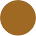

- > Alleur
- > Amay 
- > Ampsin
- > Angleur
- > Ans
- > Avin
- > Aywaille
- > Bassenge
- > Berloz
- > Beyne-Heusay
- > Blégny
- > Boncelles
- > Braives
- > Bressoux
- > Chênée
- > Clavier
- > Comblain-au-Pont
- > Couthuin
- > Crisnée
- > Donceel
- > Esneux
- > Fallais
- > Flémalle
- > Fléron
- > Grâce-Hollogne
- > Grivegnée
- > Haccourt
- > Hannut
- > Harzé
- > Héron
- > Herve
- > Hognoul
- > Huy
- > Jalhay
- > Jehay-Bodegnée
- > Jemeppe
- > Jupille-sur-Meuse
- > Lens-Saint-Remy
- > Liège
- > Longfaye
- > Lontzen
- > Malmédy
- > Marchin
- > Neupré
- > Ombret-Rawsa
- > Ougrée
- > Pepinster
- > Saint-Nicolas
- > Seraing
- > Soumagne
- > Spa
- > Sprimont
- > Stavelot
- > Stembert
- > Stoumont
- > Theux
- > Thimister
- > Tilff
- > Trois-Ponts
- > Vaux-sous-Chèvremont
- > Verviers
- > Visé
- > Waimes
- > Wanze
|
|